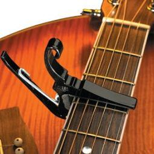
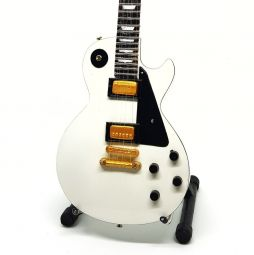

CAPO
Rp10.000
FEATURES : Reach High Note Dengan gitar capo senar ini Anda dapat dengan mudah menaikkan nada tinggi pada gitar tanpa harus menekan pada gagang gitar sehingga jari Anda menjadi bebas untuk memainkan variasi nada lain.
PICK

Rp4.500
FITUR : Memimalisasi Kesalahan Fungsi pick gitar ini, sangat cocok dipakai ketika akustik, karena bentuk pick sangat tipis dibandingkan dengan jari-jari kita, meminimalisir kesalahan yang terjadi untuk pemetikan nada.
STANDEE
Rp65.000
Bisa untuk gitar, bass, ataupun biola. Bahan besi, coating hitam halus. Bisa dilipat. Ringan dan kokoh. Mudah dibawa-bawa. Ada lapisan busa empuk sehingga tidak menggores body gitar. Ready banyak stok. Mau grosir mau eceran bisa
STRAP
Rp60.000
Tali Gitar 100% cotton ( double layer top prints geometry twill bagian dalam solid cotton ) Ujung kulit 100% memberikan kekuatan dan daya tahan yang dapat Anda percaya di lengkapi kantong untuk 3 ukuran pick gitar dan pocket Straps untuk memudahkan dalam penyimpanan